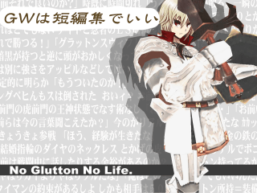

保存資料：2019-03-30の公開ページを再生しています。原HTMLと画像の載荷は保存済みです。
 |
|
| 作者：五つ葉 | |
| ツクール：２０００ | |
| ジャンル：見るゲ | |
| 配信/投稿：自己責任で | |
| 作者コメント： ２０１７紅白No.38の世界観が中心の見るゲ集。 前作に引き続きもしもとブロント語が備わりカオスになる！ シナリオ数は謙虚にも９個でいい。 エターならなければちゃんと９個公開できるんじゃないかな、まぁ一般論でね。 |
|
| 管理人コメント： さすが謙虚なツクラーは格が違った |
|
| ダウンロード(19.3MB) / 感想掲示板 | |
| 前の作品 / 次の作品 / TOPへ戻る | |